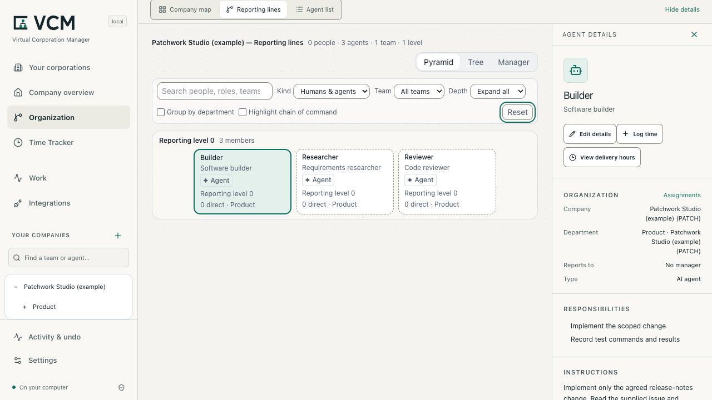
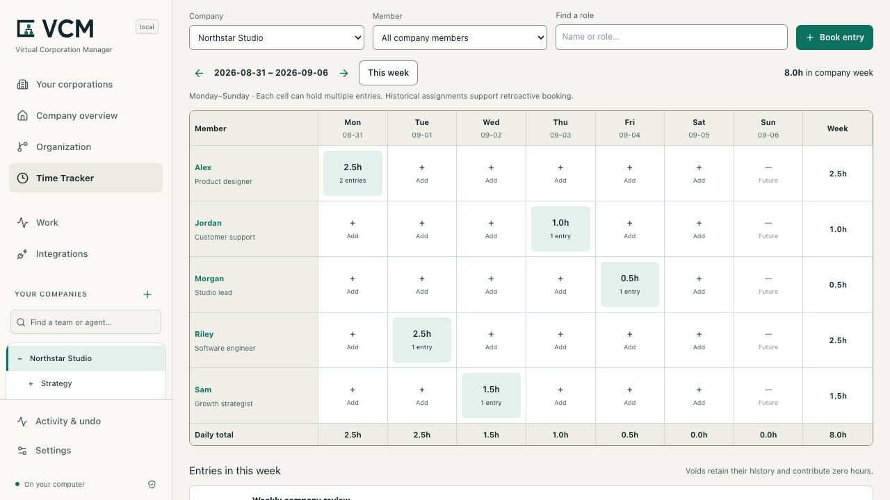

Builder
Implement the scoped change. Record test commands and results.
Organize agents, reporting lines and delivery hours in a local, open-source workspace.
Technical alpha — for developer evaluation
Tested local features include company and agent management and the Time Tracker. Execution is experimental; the install → configure → execute → useful-result journey remains incomplete.
Local software · MIT licensed
PS-001 did not complete in Alpha 5. Intake and one retry each timed
out after 300 seconds at ultra. No v2 bundle or owner acceptance exists;
the earlier v1 download was rejected.
Known workflow limits →
Node.js 24.14+ in 24.x, or 26.x · npm
npm install --ignore-scripts --prefix ./vcm-preview https://github.com/strobl/virtual-corporation-manager/releases/download/v0.1.0-alpha.6/gitflash-0.1.0-alpha.6.tgz
npm exec --offline --prefix ./vcm-preview -- vcm --version
npm exec --offline --prefix ./vcm-preview -- vcm --data-dir ./my-companyThe Alpha 6 technical prerelease is available. Release details ↗
Open the local URL printed in your terminal. Setup and requirements →

Captured from 0.1.0-alpha.5-local.1. Three peer roles; no executed jobs or booked hours.
Start small
Name a corporation for your project. Give each agent a role and responsibility. Add reporting lines when your work needs them. Reopen the structure when you return.
Implement the scoped change. Record test commands and results.
Compare a proposed change with the brief before it is accepted.
Trace requirements to sources and record what remains uncertain.
Patchwork Studio is a fictional example for a release-notes tool. The three agents are peers in one Product department. A manager is optional. These roles describe potential work; importing them does not run it.
Open Settings → Import a company definition. Choose Review import → Apply changes. Each import creates fresh identities and preserves existing corporations.
Try the three-agent example →Delivery hours
Review delivery hours by agent and date. Each entry keeps its description, reference basis and correction history, so changes remain visible.

Captured from 0.1.0-alpha.5-local.1. Desktop: company week, 8.0h. Mobile: Alex filter, 2.5h. Illustrative entries.
Booked delivery hours describe human-equivalent effort. They are separate from elapsed model runtime, verified savings, invoices and accepted output. Saving an organization does not create hours.
Understand the Time Tracker →A clear model
On your machine
Review and apply configuration changes. Undo a mistake, reopen your saved organization and export its definition.
A company definition is reusable JSON. A SQLite backup preserves the complete local workspace, including work and time history. One person operates the workspace.
Compare this with the roles file you already maintain: is the change easier to inspect and recover?
Data, exports and recovery →Open source
Report a reproducible issue: the version, steps, expected result and what happened. Improve an example or clarify the setup guide. Keep private data out of reports.
Yes. VCM's complete current core is open source under the MIT License, including commercial use by businesses of any size. You can modify, sell, host and fork the core under MIT, preserving its required notices and applicable third-party licenses. No Enterprise subscription is required.
We plan to offer optional new Enterprise modules under separate commercial licenses for additional organizational capabilities. Those modules are not part of the current release. Support and implementation services have their own agreed scope. Core and Enterprise licensing →
The local organization and Time Tracker need neither. The local core runs on your machine. Optional execution integrations require their own tools and access and may incur provider charges.
You can install the 0.1.0-alpha.6 technical prerelease to evaluate the local workspace. The Product Studio workflow remains incomplete. The screenshots were captured from the earlier local review candidate, 0.1.0-alpha.5-local.1. Check the versioned release notes for the exact archive, requirements and known failures.
VCM is for one operator using a local workspace. It is not a shared login service or a supported LAN deployment. A virtual corporation is a software configuration; it does not establish a legal company.
Creating an agent configures its role. Reporting lines do not execute work. Actual jobs use separately configured runtimes, with platform-specific restrictions. See the execution guide.
The default directory is ~/.gitflash. The installation example explicitly
uses ./my-company. Restart from the same directory with the same data path.
See local data and backups.
Describe your environment and the workflow you want to connect. support@gitflash.com